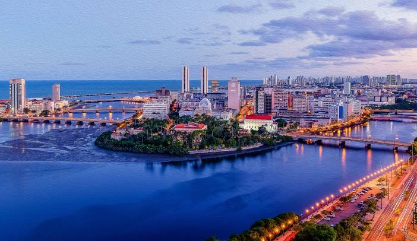

Algumas inforcções relevantes sobre Cidade de Recife

Recife é uma cidade brasileira localizada no litoral nordeste do país. É a capital do estado de Pernambuco e a mais populosa do estado.
Recife foi fundada em 1537 e surgiu como uma praia de pescadores e ancoradouro. O nome da cidade vem da muralha natural de rochedos de coral ou arrecifes que corre paralela à costa.
Recife possui um clima tropical, com temperaturas elevadas e muita umidade. A vegetação predominante é a Mata Atlântica e o litoral da cidade conta com mangues.
Recife é considerada o primeiro polo gastronômico do Nordeste, o segundo polo médico do Brasil e a cidade nordestina com o melhor IDH-M.
Praia Boa Viagem

A Praia de Boa Viagem tem aproximadamente 7 km de extensão e possui uma excelente estrutura para os turistas!
Com muitos quiosques, uma água morna e aconchegante, a praia é uma das mais visitadas em Recife, e com certeza vale a pena a visita.
Instituto Ricardo Brennand

O Instituto Ricardo Brennand é um dos pontos turísticos mais interessantes do Recife, pois tem a capacidade de agradar pessoas de todas as idades. É o local ideal para quem aprecia artes, objetos antigos e arquitetura. Com uma bela paisagem ao ar livre, árvores, cafeteria e edifícios em forma de castelo medieval, é difícil não se surpreender com a estrutura do lugar.
A propriedade de Ricardo Brennand possui exposições pernamentes e temporárias, onde é possível acompanhar obras brasileiras e de outras partes do mundo. Em um dos edifícios fica a exposição que mostra um pouco do Brasil Holandês
, com muitos quadros de Frans Prost e peças em mármore trabalhado. Outra parte legal é a representação do julgamento de Fouquet, com bonecos muito reais.